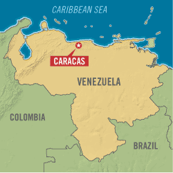

My name is victoria and this is my website would like to talk a bit about me; I born in “Caracas” the capital of a tropical and beautiful country called Venezuela, I grew there but when I was 18 Years old I decided to move out utah to live with my grandma and start a new completely life, I completed my High school in venezuela, in I start in the ESL program, right now I am takimng classes about web developement and my desire is to completed this course and then becoming in a great one  Caracas, city, capital of Venezuela, and one of the principal cities of South America. It is Venezuela’s largest urban agglomeration and the country’s primary center of industry, commerce, education, and culture. Founded in 1567 as Santiago de León de Caracas, the city grew slowly until the 1940s, after which it expanded by monumental proportions, and its influence came to extend to even the remotest parts of the country. In addition to its role as the national capital, Caracas serves as the seat of government for the Capital District, comprising an area of 167 square miles (433 square km). The city itself, however, spreads across the Capital District boundary, a considerable part of its area lying in the state of Miranda, which borders the district on the east and south. Pop. (2001) 1,836,032; (2011) 1,942,652.